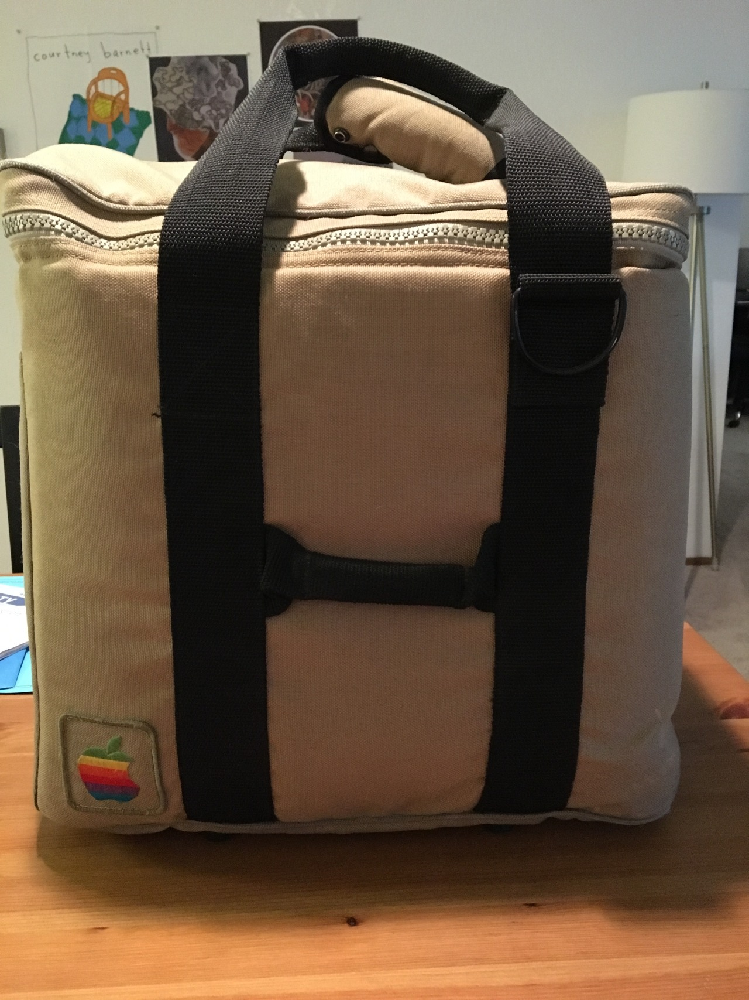
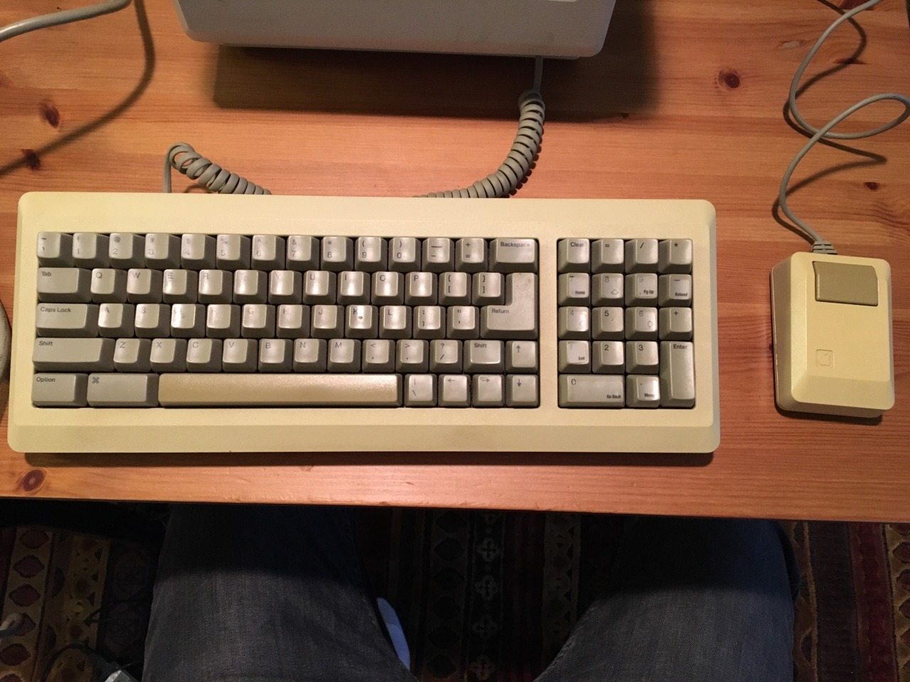
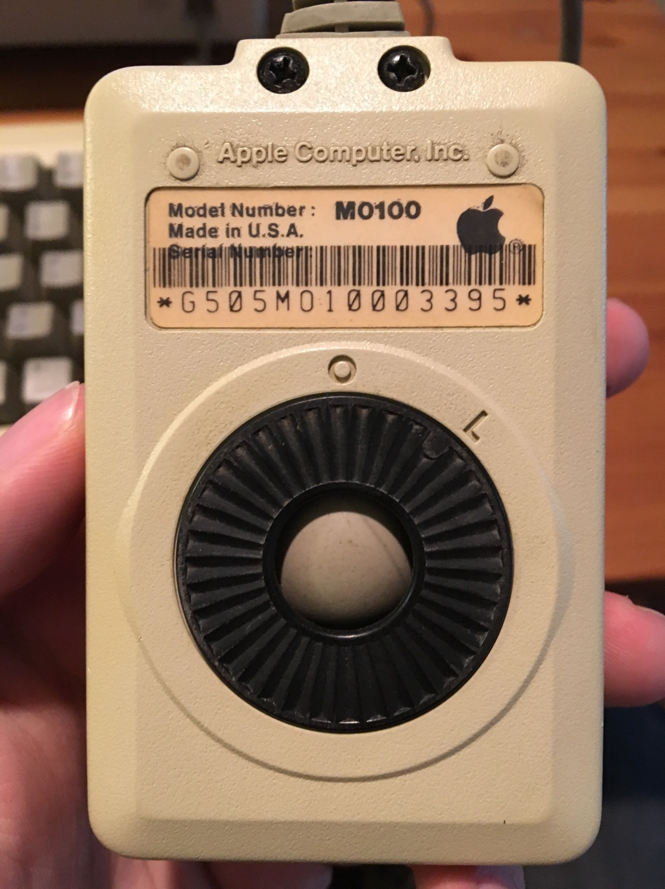

So today I picked up another Macintosh, but I had a good reason to: It came with a lot peripherals that I need in order to work on the rest of them.

It came with an original carrying case!
With a keyboard!

And a mouse!

And Flight simulator??
and finally, if that wasnt enough, it appears that it was also a Microsoft Asset Device at some point?? Probably for testing Microsoft software on the Macintosh
Either way, it was an incredible find. I am just waiting for the rescue/install floppies to arrive in the mail before I can continue the project.